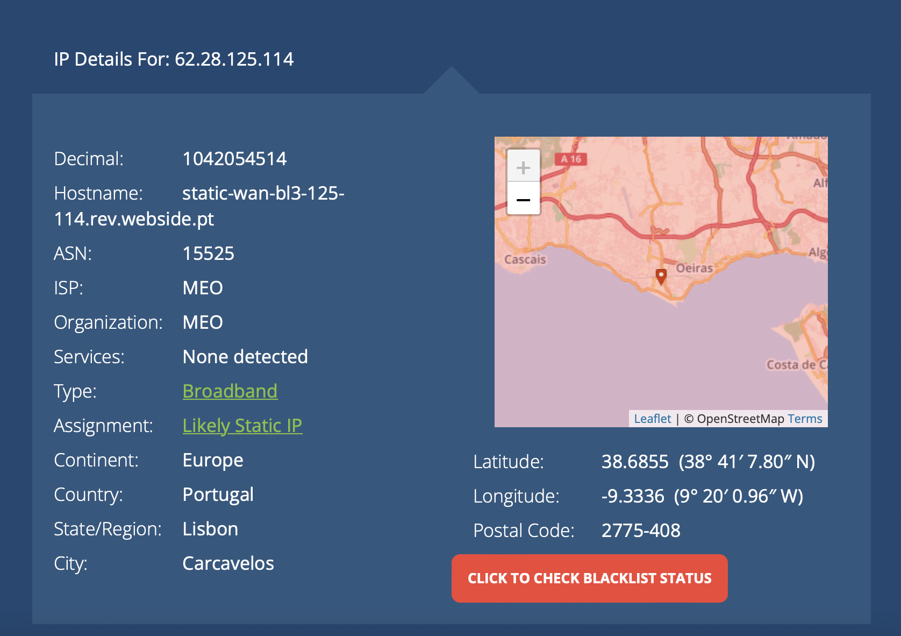
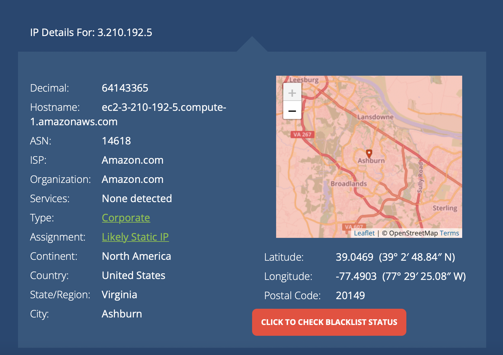
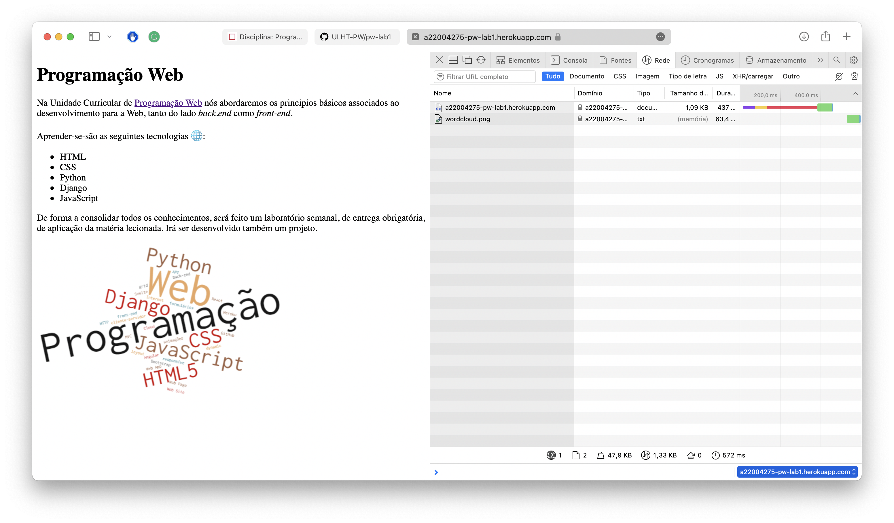
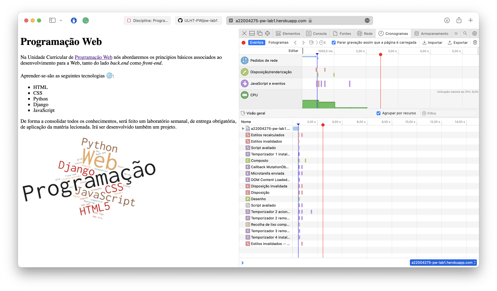
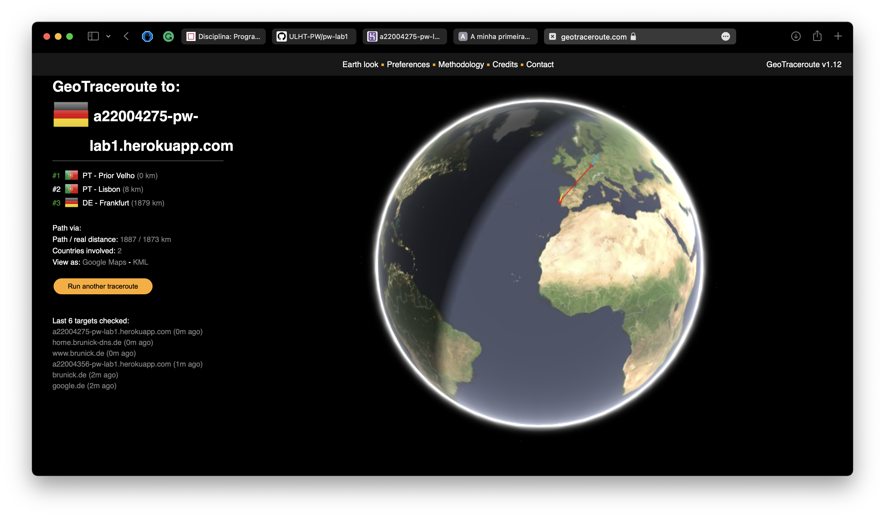

A primeira tarefa baseia-se em obter o enedereço IP do computador utilizado em aula e verificar a localização do mesmo.
Na imagem acima conseguimos perceber a falta de extadião na localização do computador, visto que o enedereço IP aparentemente se localiza em Oeiras.
Logo de seguida, verificamos a localização do anfitrião da nossa página web.
Uma localização estranha visto que mais tarde vamos a perceber que a real lozalização é bem mais perto, na Alemanha.
Nesta tarefa verificamos o tempo e os pedidos feitos ao servidor
 Nesta tarefa verificámos o caminho a percurrer desde o nosso router até à nossa página web.
Na imagem acima percebemos que apenas necessitou de 1 salto intermediário antes de chegar ao destino.